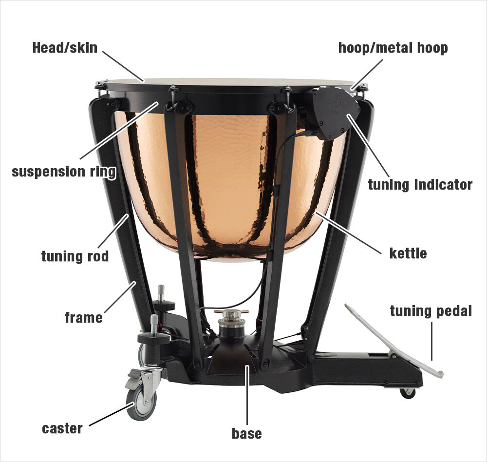
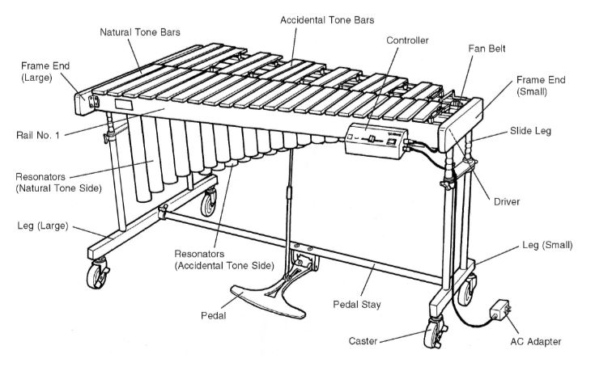
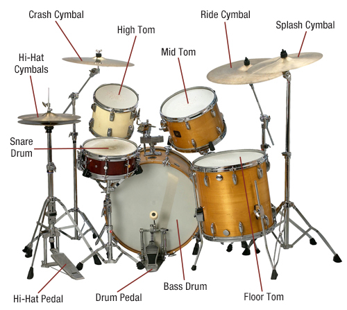

Percussion is the most adaptable family of instruments. The biggest challenge is to project percussion in a lyrical way.
-Evelyn Glennie
Percussion instruments produce sound through vibration by striking, shaking, or rubbing a surface. The sound waves travel through the air and are heard by the ear. Some can be amplified electronically for greater reach.
Percussion
Timpani
The timpani is an indispensable part of any orchestra, with its heavy bass sound that resonates deep in your abdomen. It is capable of producing accurate pitches, and can even be used to play a melody.

Xylophone
The Xylophone is a musical instrument consisting of a series of wooden bars varying in length and sounded by striking with two wooden hammers.

Drums
As the “keeper of the rhythm,” the drum provides the foundation for the overall sound of music.Because a drum only has to be hit to make a sound, it is also one of the simplest of the instruments.

Marimba
There are various ingenious ways in which the marimba is designed to produce musical notes, including in places you cannot see, as well as through the length and thickness of the wood.